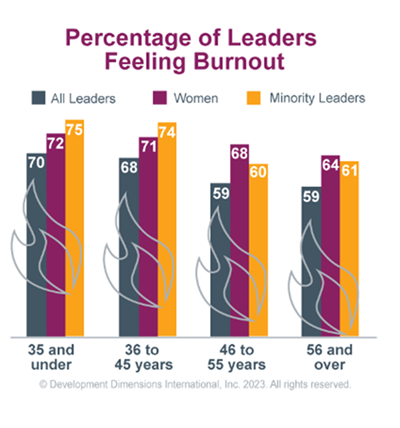

Number 1
Failure to express confidence and empower their people.
Review three delegation mistakes that can limit employee growth and satisfaction.
Failure to express confidence and empower their people.
Failure to establish a plan for monitoring and ensuring progress is made.
Delegating only administrative tasks and never assigning more challenging work to help employees grow and feel satisfied in their work.
Flip each card to review a common barrier and a strategy to overcome it.
Flip each card to review three more barriers and strategies to overcome them.

When leaders take on more work, they can become overwhelmed and stressed. They may burn out completely and leave.
DDI's Global Leadership Forecast 2023 found that 70% of leaders under age 35 report feeling used up at the end of every day, with rates even higher among women and minority leaders.
“Never confuse the cost of something with its value.” — Robin Hobbs
Chart source: Development Dimensions International, Inc. 2023.
Answer each statement True or False, then review the explanation.